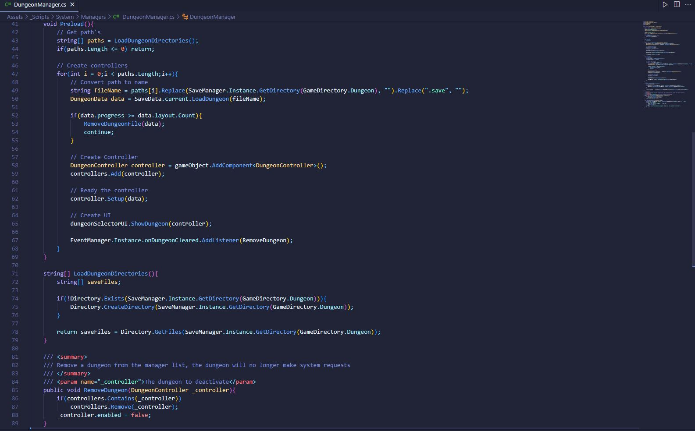

Generated Character
Guild Manager Prototype
Concept
I am currently working on a guild management prototype, drawing inspiration from the captivating guild and world designs found in Manhwa, as well as incorporating elements from popular management games like Football Manager and Darkest Dungeon.
This game combines the thrill of auto-battler mechanics with strategic decision-making. Players have the ability to dispatch parties on exciting dungeon expeditions, complete challenging quests, and explore a procedural world. As the player, your role is to oversee and manage the guild, effectively delegating tasks and devising strategies.
By leveraging the engaging gameplay elements of auto-battlers and the immersive world-building found in Manhwa, Guild Manager hopes to offer an innovative and captivating experience for players.
Dungeon
Shop
Project Details
Team Size: 1
Year: 2023
Project Form: Prototype
Project Length In Development
Engine: Unity
Source Control: PlasticSCM
Notable Work
Save System
Save System built using a BinaryFormatter, this system enables seamless saving and loading of various forms of data within Unity.
With a robust and easily expandable backend, the Save System simplifies the process of saving data, making it accessible to both novice and experienced developers.
Utilizing the concept of Surrogates, the system effortlessly converts Unity-specific data, including Sprites and ScriptableObjects, into savable data, ensuring that no valuable information is lost during the saving process.
Having been successfully integrated into multiple of my own projects, the Save System showcases its adaptability by effortlessly accommodating the specific requirements of each project it serves.
Card Generation
Units, equipment, items and more in this game are stored and represented by cards. Generating cards was an interesting challenge presented by this prototype. Different approaches were explored including Box-Muller transformations and weights. The code snippet shown below generates a character based on a given overall expected stat range. Through a series of mathematical formulas and the Box-Muller transformation algorithm, the code intelligently generates stats for the character. These stats then determine the character's class, skills, and other essential details.
This flexible data storage methodology also enables effortless customization of both custom and preset characters. By utilizing Scriptable Objects to store specific character and enemy data, the system empowers designers to create unique and tailored experiences.
The representation of data is achieved through the CharacterCard MonoBehaviour class, which effectively separates logic related to combat, decision-making, and UI handling.
The AI behavior for each character is governed by a distinct class known as the CombatBrain. This class evaluates the best possible move for a character by considering a range of factors, including the character's intelligence, team composition, enemy presence, and individual quirks. The flexibility of this system allows for the creation of custom CombatBrains tailored to specific enemy types or unique character behaviors.
When determining which characters are available for the player to encounter or recruit, the Box-Muller transformation technique is employed to ensure that the overall ratings of units fall within a given bell curve.
Through the amalgamation of thoughtful algorithms and well-designed systems, the Card Generation feature delivers dynamic and diverse generations, making each encounter and recruitment decision within the game a unique and engaging venture.
<Background Dungeons
Within the game, the ability to have multiple dungeons run asynchronously while the player interacts with other parts of the game was a crucial aspect to address. To tackle this challenge, a robust system was developed to seamlessly handle background dungeon operations.
A dedicated manager class was created to oversee active dungeons, ensuring smooth coordination and efficient resource management. Additionally, individual DungeonController classes were implemented to handle the logic of each dungeon. These controllers effectively divided tasks into separate classes, including specialized classes for UI management and combat logic.

The showcased code snippets above provide a glimpse into the implementation of this dynamic system. The Dungeon Manager class acts as the central orchestrator, coordinating and handling the activities of multiple dungeons running concurrently. On the other hand, the DungeonController classes encapsulate the logic specific to each dungeon, enabling efficient and modular development.
Through this system design, the game achieves a seamless and immersive experience, allowing players to interact with various game elements while dungeons progress and save in the background.
Skill System
The game's skill system took an approach similar to that of flexible digital card games through the use ScriptableObjects. At the core of the system lies the Skill class, composed of a series of Actions that are executed in a specific order. This design enables rapid creation of new skills, promoting a streamlined and designer-friendly workflow; While leaving the expandability of the system up to the developer or external modders.
By constructing Skills using a collection of Actions, the system empowers designers to swiftly add depth and variety to the skill system. Simple Actions, such as damaging an enemy, can be rapidly created and reused across multiple skills, eliminating the need for redundant code. Moreover, the system supports the incorporation of complexity where necessary. For instance, Conditional Actions allow for dynamic outcomes based on specific conditions. This allows designers to create deep and enriching logic for their skills.
The accompanying code snippets and images above provide a glimpse into the implementation of this versatile skill system. The code showcases the structure and organization of the Skill class, highlighting the efficient and reusable nature of Actions. Additionally, the inspector view reveals the intuitive and designer-friendly interface for skill creation and customization.
By leveraging the power of ScriptableObjects and the modular design of the Skill system, the game fosters rapid iteration and empowers designers to effortlessly create engaging and diverse skills for players to master.